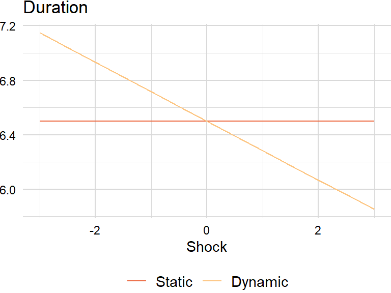
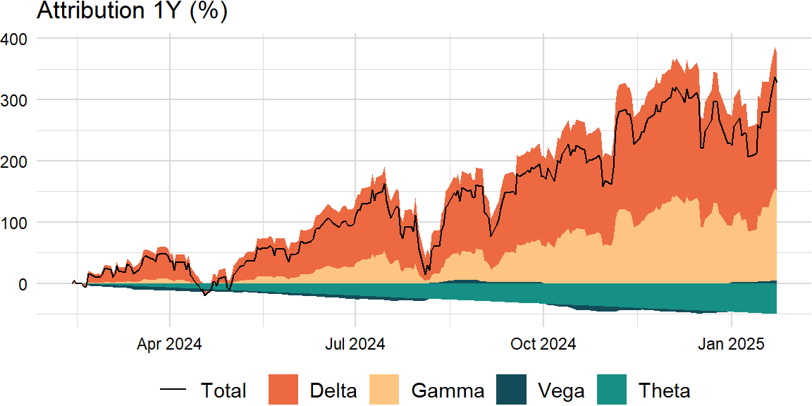

library(reticulate)
library(data.table)
source("../plot/theme_jjf.R")import pandas as pd
import numpy as np
# import statsmodels.api as sm
import pandas_datareader as pdr
from scipy.stats import norm # , chi2factors_r = ["SP500", "DTWEXAFEGS"] # "SP500" does not contain dividends; note: "DTWEXM" discontinued as of Jan 2020
factors_d = ["DGS10", "BAMLH0A0HYM2"]
factors = factors_r + factors_d
width = 252
scale = {"periods": 252, "overlap": 5}levels_df = pdr.get_data_fred(factors, start = "1900-01-01")returns_df = levels_df.apply(lambda x: np.log(x).diff() if x.name in factors_r else -x.diff() / 100)
overlap_df = returns_df.rolling(scale["overlap"], min_periods = 1).mean()
returns_df = pd.concat([returns_df, overlap_df], keys = ["returns", "overlap"], axis = 1)import datetime
from scipy.optimize import minimizesd_df = returns_df["overlap"].rolling(width, min_periods = 1).std() * \
np.sqrt(scale["periods"]) * np.sqrt(scale["overlap"])Greeks
def level_shock(shock, S, tau, sigma):
result = S * (1 + shock * sigma * np.sqrt(tau))
return result# https://en.wikipedia.org/wiki/Greeks_(finance)
# https://www.wolframalpha.com/input/?i=option+pricing+formula
factor = "SP500"
types = ["call", "put"]
S = levels_df.fillna(method = "ffill")[factor][-1]
K = S
r = 0 # use "USD3MTD156N"
q = 0 # see https://stackoverflow.com/a/11286679
tau = 1 # = 252 / 252
sigma = sd_df[factor][-1] # use "VIXCLS"
shocks = [x / 2 for x in range(-6, 7)]greeks_df = pd.DataFrame([(x, y) for x in types for y in shocks]) \
.rename(columns = {0: "type", 1: "shock"})
greeks_df["spot"] = greeks_df["shock"].apply(level_shock, args = (S, tau, sigma))Value
For a given spot price \(S\), strike price \(K\), risk-free rate \(r\), annual dividend yield \(q\), time-to-maturity \(\tau = T - t\), and volatility \(\sigma\):
\[ \begin{aligned} V_{c}&=Se^{-q\tau}\Phi(d_{1})-e^{-r\tau}K\Phi(d_{2}) \\ V_{p}&=e^{-r\tau}K\Phi(-d_{2})-Se^{-q\tau}\Phi(-d_{1}) \end{aligned} \]
def bs_value(type, S, K, r, q, tau, sigma, d1, d2):
if (type == "call"):
result = S * np.exp(-q * tau) * Phi(d1) - np.exp(-r * tau) * K * Phi(d2)
elif (type == "put"):
result = np.exp(-r * tau) * K * Phi(-d2) - S * np.exp(-q * tau) * Phi(-d1)
return resultwhere
\[ \begin{aligned} d_{1}&={\frac{\ln(S/K)+(r-q+\sigma^{2}/2)\tau}{\sigma{\sqrt{\tau}}}} \\ d_{2}&={\frac{\ln(S/K)+(r-q-\sigma^{2}/2)\tau}{\sigma{\sqrt{\tau}}}}=d_{1}-\sigma{\sqrt{\tau}} \\ \phi(x)&={\frac{e^{-{\frac {x^{2}}{2}}}}{\sqrt{2\pi}}} \\ \Phi(x)&={\frac{1}{\sqrt{2\pi}}}\int_{-\infty}^{x}e^{-{\frac{y^{2}}{2}}}dy=1-{\frac{1}{\sqrt{2\pi}}}\int_{x}^{\infty}e^{-{\frac{y^{2}}{2}}dy} \end{aligned} \]
def bs_d1(S, K, r, q, tau, sigma):
result = (np.log(S / K) + (r - q + sigma ** 2 / 2) * tau) / (sigma * np.sqrt(tau))
return result
def bs_d2(S, K, r, q, tau, sigma):
result = (np.log(S / K) + (r - q - sigma ** 2 / 2) * tau) / (sigma * np.sqrt(tau))
return result
def phi(x):
result = norm.pdf(x)
return result
def Phi(x):
result = norm.cdf(x)
return resultgreeks_df["d1"] = greeks_df.apply(lambda x: bs_d1(x["spot"], K, r, q, tau, sigma), axis = 1)
greeks_df["d2"] = greeks_df.apply(lambda x: bs_d2(x["spot"], K, r, q, tau, sigma), axis = 1)
greeks_df["value"] = greeks_df.apply(lambda x: bs_value(x["type"], x["spot"], K, r, q, tau,
sigma, x["d1"], x["d2"]), axis = 1)First-order
Delta
\[ \begin{aligned} \Delta_{c}&={\frac{\partial V_{c}}{\partial S}}=e^{-q\tau}\Phi(d_{1}) \\ \Delta_{p}&={\frac{\partial V_{p}}{\partial S}}=-e^{-q\tau}\Phi(-d_{1}) \end{aligned} \]
def bs_delta(type, S, K, r, q, tau, sigma, d1, d2):
if (type == "call"):
result = np.exp(-q * tau) * Phi(d1)
elif (type == "put"):
result = -np.exp(-q * tau) * Phi(-d1)
return resultgreeks_df["delta"] = greeks_df.apply(lambda x: bs_delta(x["type"], x["spot"], K, r, q, tau,
sigma, x["d1"], x["d2"]), axis = 1)Vega
\[ \begin{aligned} \nu_{c,p}&={\frac{\partial V_{c,p}}{\partial\sigma}}=Se^{-q\tau}\phi(d_{1}){\sqrt{\tau}}=Ke^{-r\tau}\phi(d_{2}){\sqrt{\tau}} \end{aligned} \]
def bs_vega(type, S, K, r, q, tau, sigma, d1, d2):
result = S * np.exp(-q * tau) * phi(d1) * np.sqrt(tau)
return resultgreeks_df["vega"] = greeks_df.apply(lambda x: bs_vega(x["type"], x["spot"], K, r, q, tau,
sigma, x["d1"], x["d2"]), axis = 1)Theta
\[ \begin{aligned} \Theta_{c}&=-{\frac{\partial V_{c}}{\partial \tau}}=-e^{-q\tau}{\frac{S\phi(d_{1})\sigma}{2{\sqrt{\tau}}}}-rKe^{-r\tau}\Phi(d_{2})+qSe^{-q\tau}\Phi(d_{1}) \\ \Theta_{p}&=-{\frac{\partial V_{p}}{\partial \tau}}=-e^{-q\tau}{\frac{S\phi(d_{1})\sigma}{2{\sqrt{\tau}}}}+rKe^{-r\tau}\Phi(-d_{2})-qSe^{-q\tau}\Phi(-d_{1}) \end{aligned} \]
def bs_theta(type, S, K, r, q, tau, sigma, d1, d2):
if (type == "call"):
result = -np.exp(-q * tau) * S * phi(d1) * sigma / (2 * np.sqrt(tau)) - \
r * K * np.exp(-r * tau) * Phi(d2) + q * S * np.exp(-q * tau) * Phi(d1)
elif (type == "put"):
result = -np.exp(-q * tau) * S * phi(d1) * sigma / (2 * np.sqrt(tau)) + \
r * K * np.exp(-r * tau) * Phi(-d2) - q * S * np.exp(-q * tau) * Phi(-d1)
return resultgreeks_df["theta"] = greeks_df.apply(lambda x: bs_theta(x["type"], x["spot"], K, r, q, tau,
sigma, x["d1"], x["d2"]), axis = 1)Nonlinear beta
Notional market value is the market value of a leveraged position:
\[ \begin{aligned} \text{Equity options }=&\,\#\text{ contracts}\times\text{multiple}\times\text{spot price}\\ \text{Delta-adjusted }=&\,\#\text{ contracts}\times\text{multiple}\times\text{spot price}\times\text{delta} \end{aligned} \]
# https://en.wikipedia.org/wiki/Notional_amount
def beta_option(type, S, K, r, q, tau, sigma, sec):
d1 = bs_d1(S, K, r, q, tau, sigma)
d2 = bs_d2(S, K, r, q, tau, sigma)
delta = bs_delta(type, S, K, r, q, tau, sigma, d1, d2)
notional_mv = sec["n"] * sec["multiple"] * sec["S"] * delta
notional_mv0 = sec["n"] * sec["multiple"] * sec["S"] * sec["delta"]
if (type == "call"):
result = sec["beta"] * (notional_mv - notional_mv0)
elif (type == "put"):
result = sec["beta"] * (notional_mv0 - notional_mv)
return resultbeta = 0.35
type = "call"
n = 200
multiple = 100
nav = 1000000000d1 = bs_d1(S, K, r, q, tau, sigma)
d2 = bs_d2(S, K, r, q, tau, sigma)
delta = bs_delta(type, S, K, r, q, tau, sigma, d1, d2)
sec = {
"n": n,
"multiple": multiple,
"S": S,
"delta": delta,
"beta": 1
}beta_df = pd.DataFrame([(x, y) for x in [type] for y in shocks]) \
.rename(columns = {0: "type", 1: "shock"})
beta_df["spot"] = beta_df["shock"].apply(level_shock, args = (S, tau, sigma))
beta_df["static"] = beta
beta_df["dynamic"] = beta_df \
.apply(lambda x: beta +
beta_option(type, x["spot"], K, r, q, tau, sigma, sec) / nav, axis = 1)beta_mlt <- as.data.table(py$beta_df)[ , c("type", "spot") := NULL]
beta_mlt <- melt(beta_mlt, id.vars = "shock")
beta_plt <- plot_scen(beta_mlt, title = "Beta", xlab = "Shock")
print(beta_plt)
For completeness, duration equivalent is defined as:
\[ \begin{aligned} \text{10-year equivalent }=\,&\frac{\text{security duration}}{\text{10-year OTR duration}} \end{aligned} \]
Second-order
Gamma
\[ \begin{aligned} \Gamma_{c,p}&={\frac{\partial\Delta_{c,p}}{\partial S}}={\frac{\partial^{2}V_{c,p}}{\partial S^{2}}}=e^{-q\tau}{\frac{\phi(d_{1})}{S\sigma{\sqrt{\tau}}}}=Ke^{-r\tau}{\frac{\phi(d_{2})}{S^{2}\sigma{\sqrt{\tau}}}} \end{aligned} \]
def bs_gamma(type, S, K, r, q, tau, sigma, d1, d2):
result = np.exp(-q * tau) * phi(d1) / (S * sigma * np.sqrt(tau))
return resultgreeks_df["gamma"] = greeks_df.apply(lambda x: bs_gamma(x["type"], x["spot"], K, r, q, tau,
sigma, x["d1"], x["d2"]), axis = 1)greeks_mlt <- as.data.table(py$greeks_df)[ , c("spot", "d1", "d2") := NULL]
greeks_mlt <- melt(greeks_mlt, id.vars = c("type", "shock"))
greeks_plt <- plot_scen(greeks_mlt, z = "type", title = "Greeks", xlab = "Shock") +
facet_wrap(~ variable, nrow = 1, scales = "free", labeller = labeller(variable = capitalize))
print(greeks_plt)
Taylor series
Price-yield formula
For a function of one variable, \(f(x)\), the Taylor series formula is:
\[ \begin{aligned} f(x+\Delta x)&=f(x)+{\frac{f'(x)}{1!}}\Delta x+{\frac{f''(x)}{2!}}(\Delta x)^{2}+{\frac{f^{(3)}(x)}{3!}}(\Delta x)^{3}+\cdots+{\frac{f^{(n)}(x)}{n!}}(\Delta x)^{n}+\cdots\\ f(x+\Delta x)-f(x)&={\frac{f'(x)}{1!}}\Delta x+{\frac{f''(x)}{2!}}(\Delta x)^{2}+{\frac{f^{(3)}(x)}{3!}}(\Delta x)^{3}+\cdots+{\frac{f^{(n)}(x)}{n!}}(\Delta x)^{n}+\cdots \end{aligned} \]
Using the price-yield formula, the estimated percentage change in price for a change in yield is:
\[ \begin{aligned} P(y+\Delta y)-P(y)&\approx{\frac{P'(y)}{1!}}\Delta y+{\frac{P''(y)}{2!}}(\Delta y)^{2}\\ &\approx -D\Delta y +{\frac{C}{2!}}(\Delta y)^{2} \end{aligned} \]
def pnl_bond(duration, convexity, dy):
duration_pnl = -duration * dy
convexity_pnl = (convexity / 2) * dy ** 2
result = {"duration_pnl": duration_pnl,
"convexity_pnl": convexity_pnl}
return result# https://onlinelibrary.wiley.com/doi/pdf/10.1002/9781118267967.app1
duration = 6.5 * (2 / 3)
convexity = 0.65 * (2 / 3)
dy = 0.0025 # 25 bpspnl_bond(duration, convexity, dy){'duration_pnl': -0.010833333333333332, 'convexity_pnl': 1.3541666666666667e-06}Duration drift
The derivative of duration with respect to interest rates gives:
\[ \begin{aligned} \text{Drift}&=-\frac{\partial D}{\partial y}\\ &=\frac{1}{P}\frac{\partial^{2}P}{\partial y^{2}}-\frac{1}{P^{2}}\frac{\partial P}{\partial y}\frac{\partial P}{\partial y}\\ &=C-D^{2} \end{aligned} \]
Because of market conventions, use the following formula: \(\text{Drift}=\frac{1}{100}\left(C\times 100-D^{2}\right)=C-\frac{D^{2}}{100}\)
def yield_shock(shock, tau, sigma):
result = shock * sigma * np.sqrt(tau)
return resultdef duration_drift(duration, convexity, dy):
drift = convexity - duration ** 2 / 100
change = -drift * dy * 100
result = {"drift": drift,
"change": change}
return result# "Risk Management: Approaches for Fixed Income Markets" (page 45)
factor = "DGS10"
sigma = sd_df[factor][-1]duration_df = pd.DataFrame(shocks).rename(columns = {0: "shock"})
duration_df["spot"] = duration_df["shock"].apply(yield_shock, args = (tau, sigma))
duration_df["static"] = duration
duration_df["dynamic"] = duration_df \
.apply(lambda x: duration +
duration_drift(duration, convexity, x["spot"])["change"], axis = 1)duration_mlt <- as.data.table(py$duration_df)[ , "spot" := NULL]
duration_mlt <- melt(duration_mlt, id.vars = "shock")
duration_plt <- plot_scen(duration_mlt, title = "Duration", xlab = "Shock")
print(duration_plt)
Black’s formula
A similar formula holds for functions of several variables \(f(x_{1},\ldots,x_{n})\). This is usually written as:
\[ \begin{aligned} f(x_{1}+\Delta x_{1},\ldots,x_{n}+\Delta x_{n})&=f(x_{1},\ldots, x_{n})+ \sum _{j=1}^{n}{\frac{\partial f(x_{1},\ldots,x_{n})}{\partial x_{j}}}(\Delta x_{j})\\ &+{\frac {1}{2!}}\sum_{j=1}^{n}\sum_{k=1}^{n}{\frac{\partial^{2}f(x_{1},\ldots,x_{d})}{\partial x_{j}\partial x_{k}}}(\Delta x_{j})(\Delta x_{k})+\cdots \end{aligned} \]
Using Black’s formula, the estimated change of an option price is:
\[ \begin{aligned} V(S+\Delta S,\sigma+\Delta\sigma,t+\Delta t)-V(S,\sigma,t)&\approx{\frac{\partial V}{\partial S}}\Delta S+{\frac{1}{2!}}{\frac{\partial^{2}V}{\partial S^{2}}}(\Delta S)^{2}+{\frac{\partial V}{\partial \sigma}}\Delta\sigma+{\frac{\partial V}{\partial t}}\Delta t\\ &\approx \Delta_{c,p}\Delta S+{\frac{1}{2!}}\Gamma_{c,p}(\Delta S)^{2}+\nu_{c,p}\Delta\sigma+\Theta_{c,p}\Delta t \end{aligned} \]
# unable to verify the result
def pnl_option(type, S, K, r, q, tau, sigma, dS, dt, dsigma):
d1 = bs_d1(S, K, r, q, tau, sigma)
d2 = bs_d2(S, K, r, q, tau, sigma)
value = bs_value(type, S, K, r, q, tau, sigma, d1, d2)
delta = bs_delta(type, S, K, r, q, tau, sigma, d1, d2)
vega = bs_vega(type, S, K, r, q, tau, sigma, d1, d2)
theta = bs_theta(type, S, K, r, q, tau, sigma, d1, d2)
gamma = bs_gamma(type, S, K, r, q, tau, sigma, d1, d2)
delta_pnl = delta * dS / value
gamma_pnl = gamma * dS ** 2 / value
vega_pnl = vega * dsigma / value
theta_pnl = theta * dt / value
result = {"total": delta_pnl + gamma_pnl + vega_pnl + theta_pnl,
"delta": delta_pnl,
"gamma": gamma_pnl,
"vega": vega_pnl,
"theta": theta_pnl}
return resultfactor = "SP500"
type = "call"
S = levels_df.fillna(method = "ffill")[factor][-width]
K = S * (1 + 0.05)
tau = 1 # = 252 / 252
sigma = sd_df[factor][-width]options_df = pd.concat(dict(spot = levels_df.fillna(method = "ffill")[factor][-width:],
sigma = sd_df[factor][-width:]), axis = 1)
options_df["dS"] = options_df["spot"] - S
options_df["dt"] = (options_df.index - options_df.index[0]).days / 360
options_df["dsigma"] = options_df["sigma"] - sigmaattrib_cols = ["total", "delta", "gamma", "vega", "theta"]
attrib_df = options_df.apply(lambda x: pnl_option(type, S, K, r, q, tau, sigma,
x["dS"], x["dt"], x["dsigma"]), axis = 1)
attrib_df = pd.DataFrame.from_records(attrib_df, index = attrib_df.index)
attrib_df = attrib_df[attrib_cols]attrib_mlt <- melt(as.data.table(py$attrib_df, keep.rownames = "index"), id.vars = "index")
attrib_mlt[ , index := as.Date(index)]
attrib_plt <- plot_ts_decomp(attrib_mlt, decomp = "Total", title = "Attribution 1Y (%)")
print(attrib_plt)
Ito’s lemma
For a given diffiusion \(X(t, w)\) driven by:
\[ \begin{aligned} dX_{t}&=\mu_{t}dt+\sigma_{t}dB_{t} \end{aligned} \]
Then proceed with the Taylor series for a function of two variables \(f(t,x)\):
\[ \begin{aligned} df&={\frac{\partial f}{\partial t}}dt+{\frac{\partial f}{\partial x}}dx+{\frac{1}{2}}{\frac{\partial^{2}f}{\partial x^{2}}}dx^{2}\\ &={\frac{\partial f}{\partial t}}dt+{\frac{\partial f}{\partial x}}(\mu_{t}dt+\sigma_{t}dB_{t})+{\frac{1}{2}}{\frac{\partial^{2}f}{\partial x^{2}}}\left(\mu_{t}^{2}dt^{2}+2\mu_{t}\sigma _{t}dtdB_{t}+\sigma_{t}^{2}dB_{t}^{2}\right)\\ &=\left({\frac{\partial f}{\partial t}}+\mu_{t}{\frac{\partial f}{\partial x}}+{\frac{\sigma _{t}^{2}}{2}}{\frac{\partial ^{2}f}{\partial x^{2}}}\right)dt+\sigma_{t}{\frac{\partial f}{\partial x}}dB_{t} \end{aligned} \]
Note: set the \(dt^{2}\) and \(dtdB_{t}\) terms to zero and substitute \(dt\) for \(dB^{2}\).
Geometric Brownian motion
The most common application of Ito’s lemma in finance is to start with the percent change of an asset:
\[ \begin{aligned} \frac{dS}{S}&=\mu_{t}dt+\sigma_{t}dB_{t} \end{aligned} \]
Then apply Ito’s lemma with \(f(S)=log(S)\):
\[ \begin{aligned} d\log(S)&=f^{\prime}(S)dS+{\frac{1}{2}}f^{\prime\prime}(S)S^{2}\sigma^{2}dt\\ &={\frac {1}{S}}\left(\sigma SdB+\mu Sdt\right)-{\frac{1}{2}}\sigma^{2}dt\\ &=\sigma dB+\left(\mu-{\tfrac{\sigma^{2}}{2}}\right)dt \end{aligned} \]
It follows that:
\[ \begin{aligned} \log(S_{t})-\log(S_{0})=\sigma dB+\left(\mu-{\tfrac{\sigma^{2}}{2}}\right)dt \end{aligned} \]
Exponentiating gives the expression for \(S\):
\[ \begin{aligned} S_{t}=S_{0}\exp\left(\sigma B_{t}+\left(\mu-{\tfrac{\sigma^{2}}{2}}\right)t\right) \end{aligned} \]
This provides a recursive procedure for simulating values of \(S\) at \(t_{0}<t_{1}<\cdots<t_{n}\):
\[ \begin{aligned} S(t_{i+1})&=S(t_{i})\exp\left(\sigma\sqrt{t_{i+1}-t_{i}}Z_{i+1}+\left[\mu-{\tfrac{\sigma^{2}}{2}}\right]\left(t_{i+1}-t_{i}\right)\right) \end{aligned} \]
where \(Z_{1},Z_{2},\ldots,Z_{n}\) are independent standard normals.
def sim_gbm(n_sim, S, mu, sigma, dt):
result = S * np.exp(np.cumsum(sigma * np.sqrt(dt) * np.random.normal(size = n_sim)) + \
(mu - 0.5 * sigma ** 2) * dt)
return resultThis leads to an algorithm for simulating a multidimensional geometric Brownian motion:
\[ \begin{aligned} S_{k}(t_{i+1})&=S_{k}(t_{i})\exp\left(\sqrt{t_{i+1}-t_{i}}\sum_{j=1}^{d}{A_{kj}Z_{i+1,j}}+\left[\mu_{k}-{\tfrac{\sigma_{k}^{2}}{2}}\right]\left(t_{i+1}-t_{i}\right)\right) \end{aligned} \]
where \(A\) is the Cholesky factor of \(\Sigma\), i.e. \(A\) is any matrix for which \(AA^\mathrm{T}=\Sigma\).
def sim_multi_gbm(n_sim, S, mu, sigma, dt):
n_cols = sigma.shape[1]
Z = np.random.normal(size = n_sim * n_cols).reshape((n_sim, n_cols))
X = np.add(np.sqrt(dt) * np.matmul(np.matrix(Z), np.linalg.cholesky(sigma).T),
((mu - 0.5 * np.diag(sigma)) * dt))
result = np.multiply(S, np.exp(X.cumsum(axis = 0)))
return np.asmatrix(result)# https://arxiv.org/pdf/0812.4210.pdf
# https://quant.stackexchange.com/questions/15219/calibration-of-a-gbm-what-should-dt-be
# https://stackoverflow.com/questions/36463227/geometrical-brownian-motion-simulation-in-r
# https://quant.stackexchange.com/questions/25219/simulate-correlated-geometric-brownian-motion-in-the-r-programming-language
# https://quant.stackexchange.com/questions/35194/estimating-the-historical-drift-and-volatility/
S = [1] * len(factors)
sigma = np.cov(returns_df["returns"].dropna().T, ddof = 1) * scale["periods"]
mu = returns_df["returns"].dropna().mean().tolist()
mu = [x * scale["periods"] for x in mu]
mu = mu + np.diag(sigma) / 2 # drift
dt = 1 / scale["periods"]mu_df = pd.DataFrame()
sigma_df = pd.DataFrame()for i in range(1000):
# assumes stock prices
levels_sim = pd.DataFrame(sim_multi_gbm(width + 1, S, mu, sigma, dt))
returns_sim = np.log(levels_sim).diff().dropna()
mu_sim = returns_sim.mean() * scale["periods"]
sigma_sim = returns_sim.std() * np.sqrt(scale["periods"])
mu_df = mu_df.append(pd.DataFrame(mu_sim).T)
sigma_df = sigma_df.append(pd.DataFrame(sigma_sim).T)pd.DataFrame.from_dict({"empirical": np.array(returns_df["returns"].dropna().mean()) * scale["periods"],
"theoretical": np.array(mu_df.mean())}) empirical theoretical
0 0.086493 0.086453
1 0.018691 0.017543
2 -0.001022 -0.000660
3 0.000805 0.000840pd.DataFrame.from_dict({"empirical": np.sqrt(np.diag(sigma)),
"theoretical": np.array(sigma_df.mean())}) empirical theoretical
0 0.179687 0.179698
1 0.062054 0.061841
2 0.008137 0.008130
3 0.016926 0.016922Implied volatility
Newton’s method
Newton’s method (main idea is also from a Taylor series) is a method for finding approximations to the roots of a function \(f(x)\):
\[ \begin{aligned} x_{n+1}=x_{n}-{\frac{f(x_{n})}{f'(x_{n})}} \end{aligned} \]
To solve \(V(\sigma_{n})-V=0\) for \(\sigma_{n}\), use Newton’s method and repeat until \(\left|\sigma_{n+1}-\sigma_{n}\right|<\varepsilon\):
\[ \begin{aligned} \sigma_{n+1}=\sigma_{n}-{\frac{V(\sigma_{n})-V}{V'(\sigma_{n})}} \end{aligned} \]
def implied_vol_newton(params, type, S, K, r, q, tau):
target0 = 0
sigma0 = params["sigma"]
while (abs(target0 - params["target"]) > params["tol"]):
d1 = bs_d1(S, K, r, q, tau, sigma0)
d2 = bs_d2(S, K, r, q, tau, sigma0)
target0 = bs_value(type, S, K, r, q, tau, sigma0, d1, d2)
vega0 = bs_vega(type, S, K, r, q, tau, sigma0, d1, d2)
sigma = sigma0 - (target0 - params["target"]) / vega0
sigma0 = sigma
return sigma# http://www.aspenres.com/documents/help/userguide/help/bopthelp/bopt2Implied_Volatility_Formula.html
# https://books.google.com/books?id=VLi61POD61IC&pg=PA104
S = levels_df.fillna(method = "ffill")[factor][-1]
K = S * (1 + 0.05)
sigma = sd_df[factor][-1] # overrides matrix
start = 0.2d1 = bs_d1(S, K, r, q, tau, sigma)
d2 = bs_d2(S, K, r, q, tau, sigma)
target = bs_value(type, S, K, r, q, tau, sigma, d1, d2)
params = {
"target": target,
"sigma": start,
"tol": 1e-4 # np.finfo(float).eps
}implied_vol_newton(params, type, S, K, r, q, tau) 0.14224011090559865Optimization
If the derivative is unknown, try optimization:
def implied_vol_obj(param, type, S, K, r, q, tau, target):
d1 = bs_d1(S, K, r, q, tau, param)
d2 = bs_d2(S, K, r, q, tau, param)
target0 = bs_value(type, S, K, r, q, tau, param, d1, d2)
result = abs(target0 - target)
return result
def implied_vol_optim(param, type, S, K, r, q, tau, target):
result = minimize(implied_vol_obj, param, args = (type, S, K, r, q, tau, target))
return result.x.item()implied_vol_optim(start, type, S, K, r, q, tau, target)0.14224010626277114Variance swaps
A variance swap can be written as:
\[ \begin{aligned} K_{var}={\frac{2e^{rT}}{T}}\left(\int\limits_{0}^{F_{0}}{\frac{1}{K^{2}}}P(K)dK+\int\limits_{F_{0}}^{\infty}{\frac{1}{K^{2}}} C(K)dK\right) \end{aligned} \]
The CBOE Volatility Index (VIX) is calculated as a variance swap on the 30-day variance of the S&P 500 with an adjustment term:
\[ \begin{aligned} \sigma^{2}={\frac{2e^{rT}}{T}}\left(\sum_{i=0}^{K_{0}}\frac{\Delta K_{i}}{K_{i}^{2}}P(K_{i})+\sum_{i=K_{0}}^{\infty}\frac{\Delta K_{i}}{K_{i}^{2}}C(K_{i})\right)-\frac{1}{T}\left(\frac{F}{K_{0}}-1\right)^{2} \end{aligned} \]
def rle(x):
n = len(x)
y = x.iloc[1:].reset_index(drop = True) != x.iloc[:-1].reset_index(drop = True)
i = y[y].index.tolist() + [n - 1]
result = {"lengths": np.diff([0] + i),
"values": x.reset_index(drop = True)[i]}
return result# https://cdn.cboe.com/resources/vix/vixwhite.pdf
# https://en.wikipedia.org/wiki/VIX
# https://en.wikipedia.org/wiki/Variance_swap
# https://www.ivolatility.com/doc/VarianceSwaps.pdf
def implied_vol_vix(calls_df, puts_df, r, tau):
# time to expiration
t = ((tau["exp_time"] - tau["sys_time"]).total_seconds() / 60) / (365 * 24 * 60)
# midpoint of bid and ask
calls_df["Mid"] = calls_df[["Bid", "Ask"]].mean(axis = 1)
puts_df["Mid"] = puts_df[["Bid", "Ask"]].mean(axis = 1)
options_df = calls_df[["Strike", "Mid"]] \
.merge(puts_df[["Strike", "Mid"]], on = "Strike") \
.rename(columns = {"Mid_x": "Call", "Mid_y": "Put"})
options_df["Diff"] = abs(options_df["Call"] - options_df["Put"])
# minimum absolute difference is forward index level
forward_df = options_df.loc[options_df["Diff"] == min(options_df["Diff"])]
k = forward_df["Strike"]
c = forward_df["Call"]
p = forward_df["Put"]
f = k + np.exp(r * t) * (c - p)
# strike price equal or below forward index level
k0 = options_df.loc[options_df["Strike"] <= int(f), "Strike"].iloc[-1]
# out-of-the-money options
puts_otm_df = puts_df.loc[puts_df["Strike"] < k0]
calls_otm_df = calls_df.loc[calls_df["Strike"] > k0]
# stop after two consecutive strike prices with zero bid prices
# https://stackoverflow.com/a/50311890
puts_otm_rle = rle(puts_otm_df["Bid"])
idx = puts_otm_rle["lengths"].cumsum() # end
try:
idx = idx[(puts_otm_rle["lengths"] > 1) & (puts_otm_rle["values"] == 0)].max()
puts_otm_df = puts_otm_df.iloc[(idx + 1):]
except:
pass
calls_otm_rle = rle(calls_otm_df["Bid"])
idx = calls_otm_rle["lengths"].cumsum() # end
idx = idx - calls_otm_rle["lengths"] + 1 # start
try:
idx = idx[(calls_otm_rle["lengths"] > 1) & (calls_otm_rle["values"] == 0)].max()
calls_otm_df = calls_otm_df.iloc[:idx]
except:
pass
# average put and call prices for k0
# note: exclude options with zero bid price
result_df = puts_otm_df.loc[puts_otm_df["Bid"] != 0, ["Strike", "Mid"]] \
.append(pd.DataFrame(puts_df.loc[puts_df["Strike"] == k0, ["Strike", "Mid"]] \
.append(calls_df.loc[calls_df["Strike"] == k0,
["Strike", "Mid"]]).mean(axis = 0)).transpose() \
.append(calls_otm_df.loc[calls_otm_df["Bid"] != 0,
["Strike", "Mid"]])).reset_index(drop = True)
# differences between strike prices
# note: create new column
result_df.loc[0, "Diff"] = result_df.loc[1, "Strike"] - result_df.loc[0, "Strike"]
result_df["Diff"].iloc[-1] = result_df["Strike"].iloc[-1] - result_df["Strike"].iloc[-2]
result_df["Diff"].iloc[1:-1] = (result_df["Strike"].iloc[2:].values -
result_df["Strike"].iloc[:-2].values) / 2
# variance
v = sum(result_df["Diff"] / result_df["Strike"] ** 2 * np.exp(r * t) *
result_df["Mid"]) * (2 / t) - (1 / t) * (f / k0 - 1) ** 2
result = {"t": t,
"v": v}
return resultsys_time = datetime.datetime.now().replace(hour = 9, minute = 46, second = 0)v1 = implied_vol_vix(pd.read_csv("../securities/near_calls.csv"), pd.read_csv("../securities/near_puts.csv"), 0.000305,
{"sys_time": sys_time,
"exp_time": sys_time.replace(hour = 8, minute = 30, second = 0) +
datetime.timedelta(days = 25)})
v2 = implied_vol_vix(pd.read_csv("../securities/next_calls.csv"), pd.read_csv("../securities/next_puts.csv"), 0.000286,
{"sys_time": sys_time,
"exp_time": sys_time.replace(hour = 15, minute = 0, second = 0) +
datetime.timedelta(days = 32)})nt1 = v1["t"] * (365 * 24 * 60)
nt2 = v2["t"] * (365 * 24 * 60)
n30 = 30 * (24 * 60)
n365 = 365 * (24 * 60)vix = np.sqrt(((v1["t"] * v1["v"] * ((nt2 - n30) / (nt2 - nt1))).values +
(v2["t"] * v2["v"] * ((n30 - nt1) / (nt2 - nt1))).values) * (n365 / n30))
vixarray([0.13685821])Implied yield
def yield_option(type, S, K, r, q, tau, sigma):
d1 = bs_d1(S, K, r, q, tau, sigma)
d2 = bs_d2(S, K, r, q, tau, sigma)
value = bs_value(type, S, K, r, q, tau, sigma, d1, d2)
if (type == "call"):
result = (value / S) / tau
elif (type == "put"):
result = (value / K) / tau
return resultsigmas = [x / 100 for x in range(10, 31, 4)]
taus = [x / 252 for x in range(20, 127, 20)]yield_df = pd.DataFrame([(x, y) for x in sigmas for y in taus]) \
.rename(columns = {0: "sigma", 1: "tau"})
yield_df["yield"] = yield_df.apply(lambda x: yield_option(type, S, K, r, q, x["tau"], x["sigma"]),
axis = 1)
yield_df["sigma"] = yield_df["sigma"] * 100
yield_df["tau"] = yield_df["tau"] * scale["periods"]yield_plt <- plot_heatmap(py$yield_df, x = "tau", y = "sigma", z = "yield",
title = "Yield (%)", xlab = "Tau", ylab = "Sigma")
print(yield_plt)